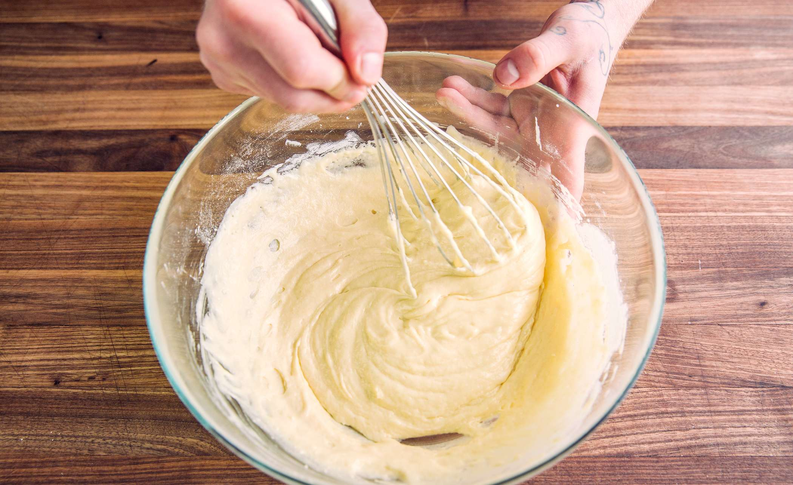
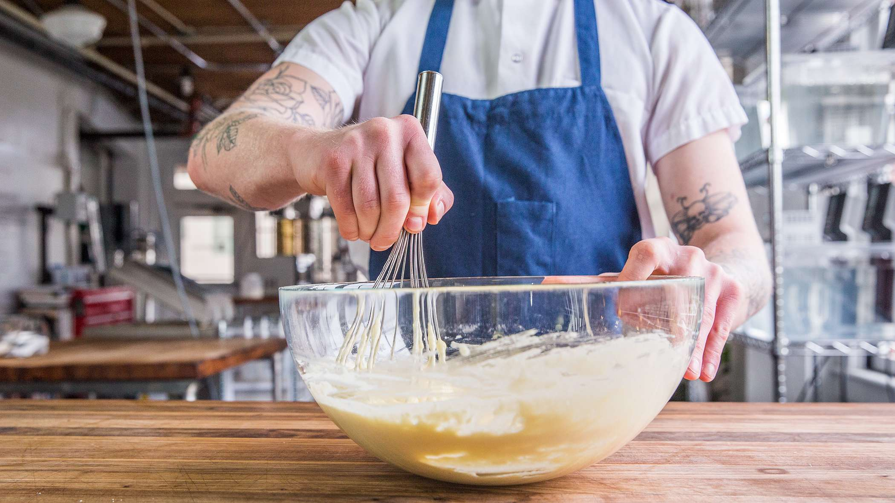
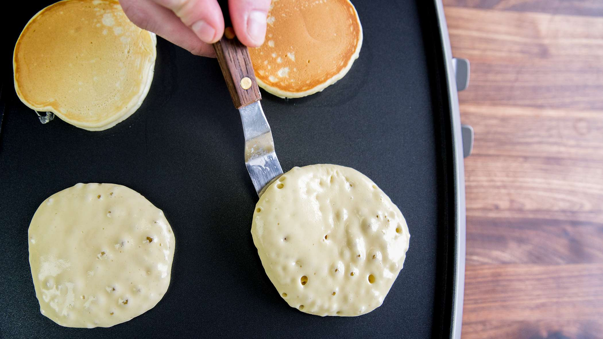
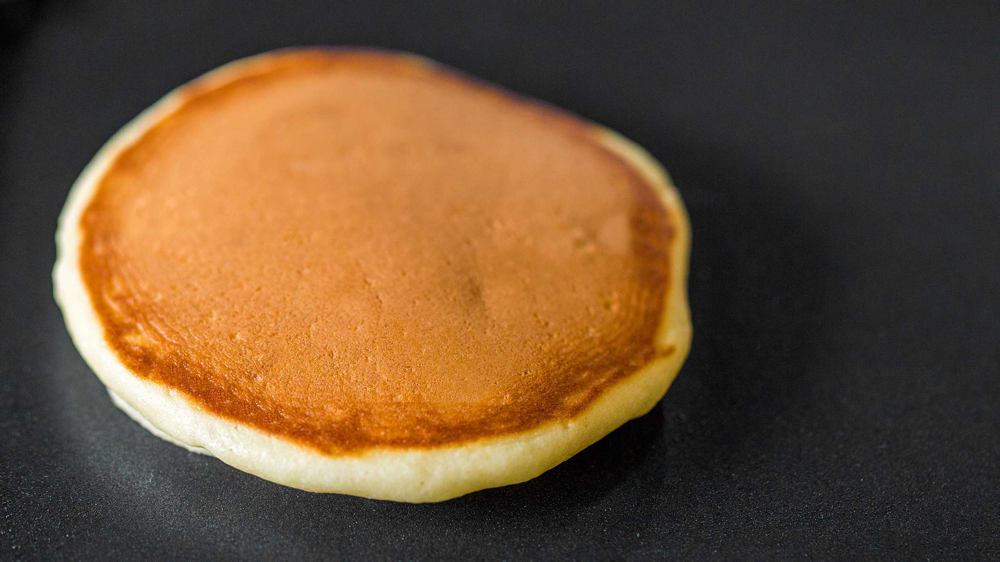
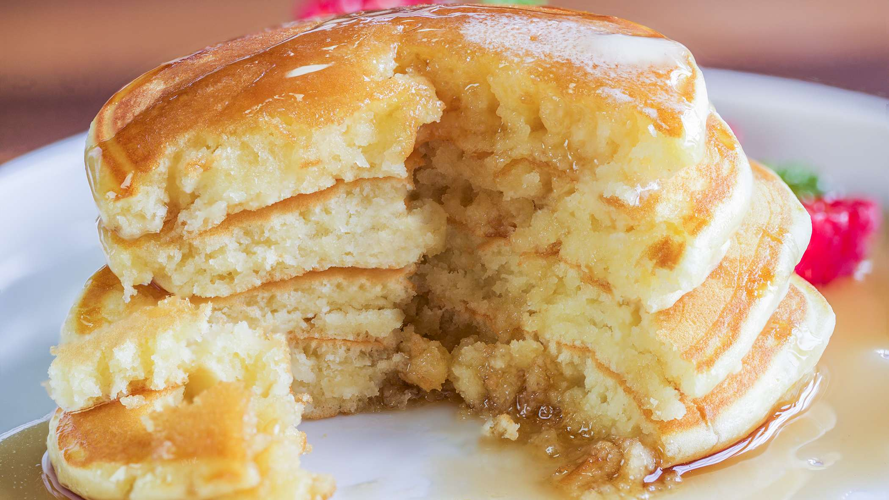

FLUFFY HOMEMADE
PANCAKE RECIPE
PREP
Prep Time: 5 minutes
Cook Time: 20 minutes
Total Time: 25 minute
Yield: 15-20 pancakes
INGREDIENTS
2 cups (260g) all-purpose flour
4 tbsp (52g) sugar
4 tsp baking powder
1/2 tsp salt
1 large egg
1 1/2 cups (360ml) milk
4 tbsp (56g) butter, melted and slightly cooled
2 tsp vanilla
RECIPE

- Combine the flour, sugar, baking powder and salt in a large bowl.

- In a large measuring cup, combine the egg, milk, butter and vanilla extract.

- Add the wet ingredients to the dry ingredients and gently fold them together until well combined, but still a little lumpy. You don’t want to over mix them or they could end up less fluffy and tough. The batter should be relatively thick, but easily pourable.
- Set the batter aside to rest while you heat the griddle, 5-10 minutes. Any remaining lumps with start to soften as the moisture soaks in. Gently stir again.
- Heat a griddle or non-stick pan over medium-low heat and melt a little butter to grease it. Pour batter onto the pan and let it spread out into a round pancake. I used about 3 tablespoons of batter per pancake.

- Allow to cook until bubbles appear on the surface and the edges are set, then flip and cook until golden.

- Continue cooking with the remaining batter.

- Serve pancakes with maple syrup or your choice of toppings.